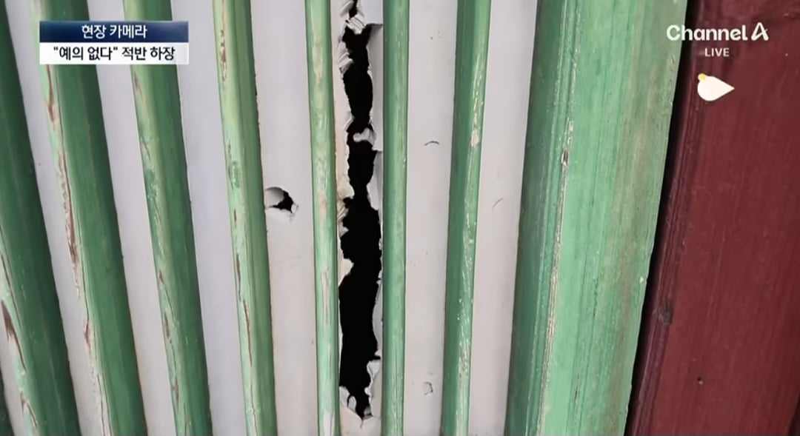
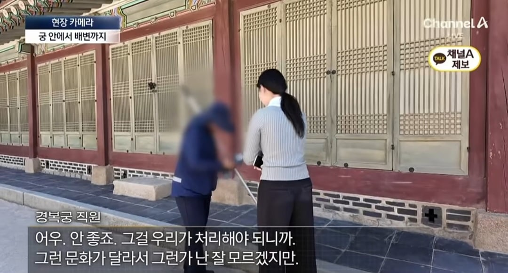
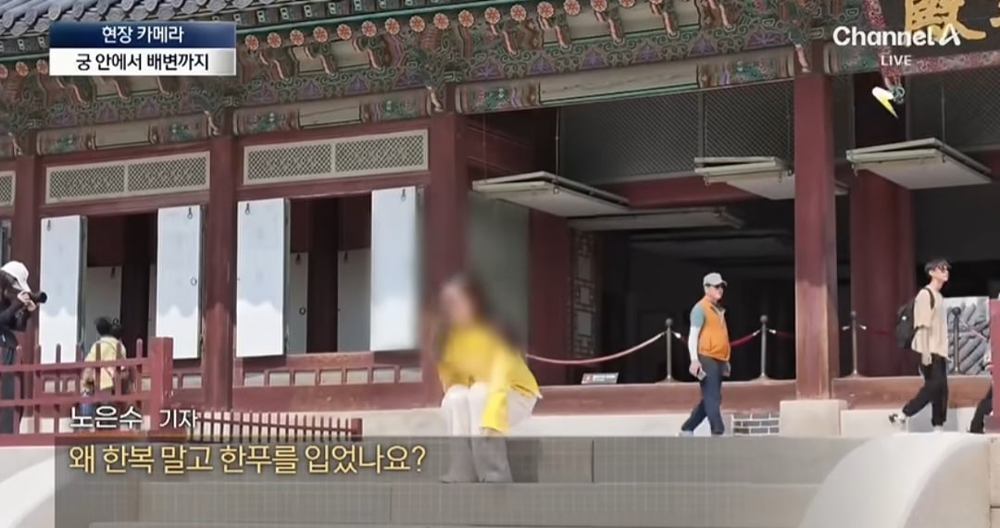

궁궐 내 행사중에 버젓이 흡연
출입금지 펜스가 있는데도아무렇지 읺게 넘어다님

멋대로 창호지 뚫어서 내부 염탐

멋대로 용변봄. 예전에 이슈되었는데도 개의치 않는듯

한푸 입고 용변보고 문화제 훼손, 무단침입하는 중국인들에 비교가 안되는 폴란드 관광객분들의 마인드 일부러 한복 맞춰서 입고 존중해주심.
계속 이딴식으로 중국인들 행패 부리는거 언제까지 놔둘지 궁금함.
궁궐 내 행사중에 버젓이 흡연
출입금지 펜스가 있는데도아무렇지 읺게 넘어다님

멋대로 창호지 뚫어서 내부 염탐

멋대로 용변봄. 예전에 이슈되었는데도 개의치 않는듯

한푸 입고 용변보고 문화제 훼손, 무단침입하는 중국인들에 비교가 안되는 폴란드 관광객분들의 마인드 일부러 한복 맞춰서 입고 존중해주심.
계속 이딴식으로 중국인들 행패 부리는거 언제까지 놔둘지 궁금함.
폴란드 사람들은 한복인지 한푸인지 정확하게 모르니까 그럴수 있다 생각한다
ㄴㄴ 폴란드분들은 올바른 한복 입고 계시는데
중국놈들은 지들 복장 입고있음
왜 한푸를 입었냐는 중국인한테 한거고(영상 3:00)
렉카가 중국인 대답 캡쳐를 건너뛰는바람에
폴란드인 인터뷰는 따로인데도(3:05) 오해생긴거
고마워요 스피드웨건
소말리 되 봐야 잠깐이라도 멈출듯
소말리 되는 누구임
쟤들은 지들나라꺼에도 저지랄아님?
문화대혁명
자기들 거는 문화대혁명 해버렸잖아 ㅋㅋ 저새끼들 기준으로 저 정도면 존중임
바랄걸 바래라
병신들
정작 본국에서 한푸입고 돌아다니다가 행인들한테 기모노 입은 매국노라고 개쳐맞음
얼마나 근본없는 옷이면 디자인이 서로 다르고 오래 살던 노인들도 알아보지 못하고 기모노라고 매도함 ㅋㅋㅋ
코메디도 이런 코메디가 따로 없음
그나라 라서 까는게 아니라
까고 보니 그나라…
문화제 > 문화재
싹다 잡아죽여라
어디 소국이 대국에 개기누 마인드
지들것도 예절 없을껀데 타국꺼야 오죽하겠어
자금성이었으면 담배 꼬라물자마자 공안한테 끌려갔을껀데ㅋㅋ
뭘 새삼스럽게... 짱ㄱㄱㅐ가 그렇지 뭐
경비 세워서 쫓아내
어림없지. 무비자입국 연장빔-
중국 무비자~
개새끼한테 무슨 매너를 바라냐
홍위병 피 어디 안가지
문화제는 문화 축제
문화재
보일때마다 체포해서 벌금 빡세게 먹이면 안되나
전세계 민심 다 박살났는데
개드립에서는 중국 욕하면 쉴드쳐줌
중국 달달허다~
그냥 중국인 대상으로 소지품 검사하자. 맨날 하던거라 불만은 없을거 아니야.
지들 좋은건 다 불태우고 때려부숴놓고 이제와서 애국하는척이지 ㅋㅋ 저거 안하면 중국 귀국했을때 취조당할수도있는거아님? ㅋㅋㅋ
남의 나라 존중이 없는게 아니라 애초에 그런 개념이 존재 하지 않음!
병신들이 병신짓하는거야 그러려니한데 통제 안함? 몇달전부터 똑같은 뉴스가 계속나오네
저놈들은 자금성에서도 똑같이 하나?
경찰 배치하고 단속해야지 뭐
짱궈 자금성가면 공안들이 빠따들고 염병못하게 지키고있음
금수들을 저런 하지마시오 팻말 하나로 다뤄질거로 기대한게 패착
저새끼들 해외여행 다닐정도면 자국에서도 좀 살만한새끼들일텐데 본토 오리지널 짱은 어느정도나는거지ㅋㅋ
진핑아 애들 교육좀 시켜라
타고난 천성이 미개하고 저열한 것들이라 인도 경찰들이 하듯이 줘패서 계도해야 됨